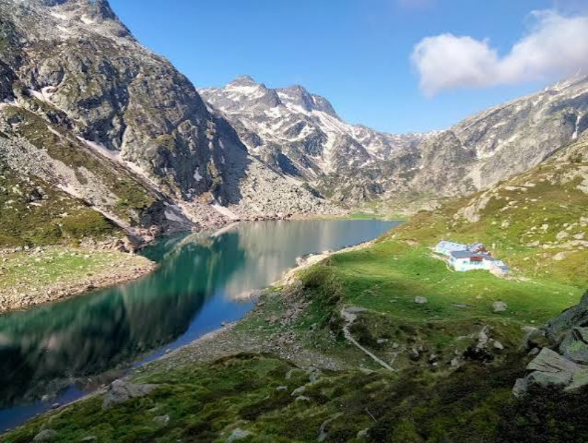

Les Sentiers pieds nus de l'Arize
📍 37,7 km — 🕐 40 min
📅 Horaires variables : consulter le site.
L'Ariège est un territoire authentique mêlant patrimoine, nature et activités de plein air.
Depuis le camping, de nombreux sites sont accessibles en moins d'une heure.
Retrouvez ici les principaux sites.
Le Château de Foix — 🕐 10h-18h
— 🚗 28 minutes / 25km.
Retrouvez le lien ici.
Le Château de Montségur — 🕐 Consulter le site internet
— 🚗 55 minutes / 55km
Retrouvez le lien ici.
Le Palais des évêques — 🕐 10h30-12h30 / 14h-18h
— 🚗 1h05 / 65km
Retrouvez le lien ici.
Le Château de Roquefixade — 🕐 Accès libre et gratuit
— 🚗 45 minutes / 43km
Retrouvez le lien ici.
Le Château de Crampagna — 🕐 Consulter le site internet
— 🚗 20 minutes / 18km
Retrouvez le lien ici.
La Grotte de Niaux — 🕐 Consulter le site internet
— 🚗 40 minutes / 45km.
Retrouvez le lien ici.
La Grotte de Bedeilhac — 🕐 Consulter le site internet
— 🚗 35 minutes / 42km.
Retrouvez le lien ici.
La Grotte du Mas d'Azil — 🕐 Consulter le site internet
— 🚗 38 minutes / 33km
Retrouvez le lien ici.
La Grotte de Lombrives — 🕐 Consulter le site
— 🚗 40 minutes / 43km
Retrouvez le lien ici.
La Grotte de Labouiche — 🕐 Consulter le site internet
— 🚗 30 minutes / 27km
Retrouvez le lien ici.
La Grotte de la Vache — 🕐 Consulter le site internet
— 🚗 36 minutes / 43km
Retrouvez le lien ici.
Plateau de Beille :
Espace nordique et activités de pleine nature, en été comme en hiver !
Lac de Bethmale :
Un magnifique lac pour se balader et se détendre en toute saison.
Cascade d'Ars :
Une superbe cascade au départ du village thermal d'Aulus-les-Bains.
Parc Naturel Régional :
Des paysages préservés et exceptionnels, reconnu pour sa diversité patrimoniale, culturelle et paysagère.
Pic du Montcalm :
Le pic du Montcalm est un sommet des Pyrénées françaises culminant à 3 077 mètres.
Découvrez les produits locaux, les producteurs et les spécialités de notre région lors de nos marchés.
Cette liste est non-exhaustive.
N'hésitez pas à vous rapporochez de
l'Office du Tourisme.
pour plus de renseignements.
Mirepoix — 📍 Place du Maréchal Leclerc — 🕐 7h-13h
— 🚗 31 minutes / 25km.
Pamiers — 📍 Parking Jean-Jaurès — 🕐 6h-13h
— 🚗 6 minutes / 1.5km.
Varilhes — 📍 Place de la Libération — 🕐 8h-12h30
— 🚗 18 minutes / 11km.
Foix — 📍 Place de la Halle Aux Grains — 🕐 7h30-13h30
— 🚗 25 minutes / 22km.
Saint-Jean-du-Falga —📍 Place Jean Jaurès — 🕐 8h-13h
— 🚗 12 minutes / 6km.
Pamiers — 📍 Parking Jean-Jaurès — 🕐 6h-13h
— 🚗 6 minutes / 1.5km.
Mirepoix — 📍 Place du Maréchal Leclerc — 🕐 7h-13h
— 🚗 31 minutes / 25km.
Mazères — 📍 Place de l'Eglise — 🕐 8h-13h
— 🚗 23 minutes / 18km.
Saint-Jean-de-Verges — 📍 Rue de la Mairie — 🕐 9h-12h
— 🚗 23 minutes / 18km.
Saverdun — 📍 Place du Général De Gaulle — 🕐 8h-12h
— 🚗 20 minutes / 17km.
Foix — 📍 Place de la Halle Aux Grains — 🕐 8h-13h
— 🚗 25 minutes / 22km.
Pamiers — 📍 Place de la République — 🕐 6h-14h
— 🚗 6 minutes / 1.5km.
Saint-Pierre-de-Rivière — 📍 Parking du Stade — 🕐 7h30-12h30
— 🚗 32 minutes / 26km.
Verniolle — 📍 Place de la Mairie — 🕐 8h-12h
— 🚗 15 minutes / 8km.
Prayols — 📍 6 Place de la Mairie — 🕐 8h-12h
— 🚗 29 minutes / 30km.
En famille, entre amis ou en pleine nature, découvrez
les activités et les sites de loisirs à proximité du camping.
Les temps de trajet sont indicatifs.
📍 37,7 km — 🕐 40 min
📅 Horaires variables : consulter le site.
Cinq hectares de bambous, de fleurs et d'arbres au bord de l'Hers vif, à parcourir librement, entre ombre et lumière.
📍 13,1 km — 🕐 19 min
📅 Horaires variables : consulter le site.
📍 18,7 km — 🕐 28 min
Visite du parc et possibilité de visite guidée en tracteur, sur réservation.
📅 Horaires variables : consulter le site.
Découvrez ces animaux sauvages et fascinants dans un cadre naturel préservé.
📍 75,5 km — 🕐 1 h 13
📅 Horaires variables : consulter le site.
📍 40,9 km — 🕐 41 min
Curieux, passionnés ou même phobiques ? Plongez dans l’univers fascinant des reptiles !
📅 Horaires variables : consulter le site.
📍 80,1 km sans péage — 🕐 1 h 23
Ou 112 km avec péages — 🕐 1 h 11.
📅 Horaires variables : consulter le site.
📍 30 km — 🕐 34 min
Xploria est un espace d’aventures ludiques et scientifiques, conçu pour vous offrir une Xpérience unique : apprendre la nature en s’amusant!
📅 Horaires variables : consulter le site.
📍 63,7 km — 🕐 environ 1 h 02
📅 Horaires variables : consulter le site.
📍 25 km — 🕐 25 min
📅 Horaires variables : consulter le site.
📍 37,3 km — 🕐 32 min
📅 Horaires variables : consulter le site.
📍 Espace muséographique : 54,3 km — 🕐 50 min
📍 Carrière de talc : 69,3 km — 🕐 1 h 15
📅 Horaires variables : consulter le site.
📍 72,3 km — 🕐 1 h 12
📅 Horaires variables : consulter le site.
📍 32,7 km — 🕐 35 min
📅 9h–18h. Jours d'ouverture à confirmer sur le site.
📍 40,3 km — 🕐 33 min
📅 Horaires variables : consulter le site.
📍 23,2 km — 🕐 28 min
📅 9h–19h30 toute l'année. Réservation hors juillet-août.
Consulter le site ici.
📍 Base pleine nature au Vernet-d'Ariège : 9,6 km · 15 min.
📍 Base de Foix : 20,5 km — 🕐 21 min.
📅 Horaires variables : consulter le site.
📍 52 km — 🕐 52 min
📅 Horaires variables : consulter le site.
📍 13,6 km — 🕐 20 min
📅 Horaires à consulter sur le site.
📍 72,3 km — 🕐 1 h 12
📅 Horaires variables : consulter le site.
📍 35 km — 🕐 40 min
📅 Horaires variables : consulter le site.
📍 65 km — 🕐 1 h 07
📅 Horaires variables : consulter le site.
📍 38 km · 28 min
